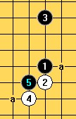

大瑞星（瑞星刀）和大大瑞星刀
#1 大瑞星（瑞星刀）和大大瑞星刀 作者：下棋思思 发表时间：2008-12-3 10:09:48
大瑞星大家都知道是黑1、黑3间二的开局，大大瑞星是我自己起的名，是黑1、黑3间三的开局，因为没看到权威人士称它什么，而又常能看到一些人开这种局，我就给它取了个小名。众所周知大瑞星黑不用两打白已必胜，那么大大瑞星更是白必胜的。关键是白要看好下一手别给黑棋反先的机会，尤其是VCF的机会。
我查看了一下，好像这里无大瑞星白必胜的资料，为了给像我这样的初学者分享这份资料，试着发一贴。
 瑞星刀白必胜走法1.rar
瑞星刀白必胜走法1.rar
［ 失落刀 于 2008-12-3 18:40:09 时奖励此帖[金币加 20 威望加1］谢谢分享。
#2 Re:大瑞星（瑞星刀）和大大瑞星刀 作者：逆刃 发表时间：2008-12-3 10:45:27
大瑞星的谱本站其实还是有的，只是没有单独的帖子，细心的朋友会发现其实有个谱里面就有大瑞星的谱。可以参见ShowPost.asp?ThreadID=4480#3 Re:大瑞星（瑞星刀）和大大瑞星刀 作者：冷面孤煞 发表时间：2008-12-3 20:05:32
=======上图对应的爱五子棋谱代码如下，以便你拆解：========
h8h9h5i10
======================================================
=======上图对应的爱五子棋谱代码如下，以便你拆解：========
h8h9h4g9
======================================================个人研究的必胜4，
#4 Re:大瑞星（瑞星刀）和大大瑞星刀 作者：陨落之城 发表时间：2008-12-7 11:40:23
谢谢楼主的资料~~#5 Re:大瑞星（瑞星刀）和大大瑞星刀 作者：海梦 发表时间：2008-12-8 18:39:30
楼主，强人啊。我是菜鸟。您的瑞星刀白必胜走法中黑方第五手给出了三个选点，好像确实白必胜。那么黑五手走G7点，白能胜吗？或者说这里是黑必？胜？=======上图对应的爱五子棋谱代码如下，以便你拆解：========
h8h7h11g6g7
======================================================
#6 Re:Re:大瑞星（瑞星刀）和大大瑞星刀 作者：yoda 发表时间：2008-12-8 19:59:35

白有多种胜法。
［ 失落刀 于 2008-12-8 20:55:47 时奖励此帖[金币加 20 威望加1］感谢对棋友的指点。
#7 Re:Re:大瑞星（瑞星刀）和大大瑞星刀 作者：下棋思思 发表时间：2008-12-9 11:27:45
=======上图对应的爱五子棋谱代码如下，以便你拆解：========
h8h9h4g10
======================================================
白4占G9、G10应该都是白必胜的，甚至F9，高手看这问题太简单都不肯说了，我是看棋型凭感觉，但我的感觉没有一定的把握我也不敢说。因为黑3太远，只要注意不让他呼应上就能白必胜。
［ 失落刀 于 2008-12-9 23:01:36 时奖励此帖[金币加 20 威望加1］言之有理，强。